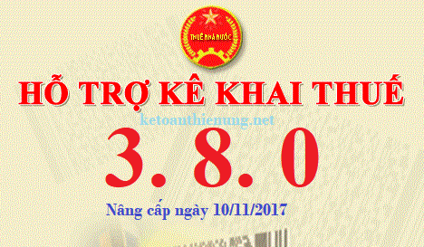

Phần mềm HTKK 3.8.0 mới nhất ngày 10/11/2017 của Tổng cục thuế, ứng dụng Khai thuế qua mạng (iHTKK) phiên bản 3.6.0 và ứng dụng Hỗ trợ đọc, xác minh tờ khai, thông báo thuế định dạng XML (iTaxViewer) phiên bản 1.4.2
TỔNG CỤC THUẾ THÔNG BÁO
V/v: Nâng cấp ứng dụng Hỗ trợ kê khai (HTKK) phiên bản 3.8.0, ứng dụng Khai thuế qua mạng (iHTKK) phiên bản 3.6.0 và ứng dụng Hỗ trợ đọc, xác minh tờ khai, thông báo thuế định dạng XML (iTaxViewer) phiên bản 1.4.2 đáp ứng yêu cầu nghiệp vụ theo Thông tư số 300/2016/TT-BTC ngày 15/11/2016 của Bộ Tài chính quy định sửa đổi, bổ sung hệ thống mục lục ngân sách nhà nước
V/v: Nâng cấp ứng dụng Hỗ trợ kê khai (HTKK) phiên bản 3.8.0, ứng dụng Khai thuế qua mạng (iHTKK) phiên bản 3.6.0 và ứng dụng Hỗ trợ đọc, xác minh tờ khai, thông báo thuế định dạng XML (iTaxViewer) phiên bản 1.4.2 đáp ứng yêu cầu nghiệp vụ theo Thông tư số 300/2016/TT-BTC ngày 15/11/2016 của Bộ Tài chính quy định sửa đổi, bổ sung hệ thống mục lục ngân sách nhà nước
Đáp ứng yêu cầu nghiệp vụ theo Thông tư số 300/2016/TT-BTC ngày 15/11/2016 của Bộ Tài chính quy định sửa đổi, bổ sung hệ thống mục lục ngân sách nhà nước, Tổng cục Thuế đã hoàn thành nâng cấp các ứng dụng hỗ trợ kê khai thuế (HTKK) phiên bản 3.8.0, ứng dụng Khai thuế qua mạng (iHTKK) phiên bản 3.6.0, ứng dụng Hỗ trợ đọc, xác minh tờ khai, thông báo thuế định dạng XML (iTaxViewer) phiên bản 1.4.2, cụ thể như sau:
- Nâng cấp danh mục thuế tài nguyên, thuế bảo vệ môi trường, phí bảo vệ môi trường, thuế tiêu thụ đặc biệt, phí, lệ phí thuộc các chức năng kê khai tờ khai 01/TAIN, 02/TAIN, 01/TTĐB, 01/TBVMT, 01/PHLP, 02/PHLP, 01/BVMT, 02/BVMT, 01/CNKD trên ứng dụng HTKK, iHTKK theo Thông tư số 300/2016/TT-BTC.
- Nâng cấp ứng dụng iTaxViewer phiên bản 1.4.2 đáp ứng các nội dung nâng cấp của ứng dụng iHTKK phiên bản 3.6.0.
Bắt đầu từ ngày 12/11/2017, khi kê khai các tờ khai có liên quan đến nội dung nâng cấp nêu trên, tổ chức cá nhân nộp thuế sẽ sử dụng các chức năng kê khai tại ứng dụng HTKK 3.8.0, iHTKK 3.6.0 thay cho các phiên bản trước đây.
Các bạn có thể tải phần mềm HTKK 3.8.0 về tại đây nhé:
Hoặc liên hệ trực tiếp với cơ quan Thuế địa phương để được cung cấp và hỗ trợ trong quá trình cài đặt, sử dụng.
Mọi phản ánh, góp ý của tổ chức, cá nhân nộp thuế được gửi đến Cục Thuế theo các số điện thoại, hộp thư điện tử hỗ trợ NNT về ứng dụng HTKK, iHTKK, iTaxViewer do cơ quan Thuế cung cấp.
--------------------------------------------------------------------------------------
